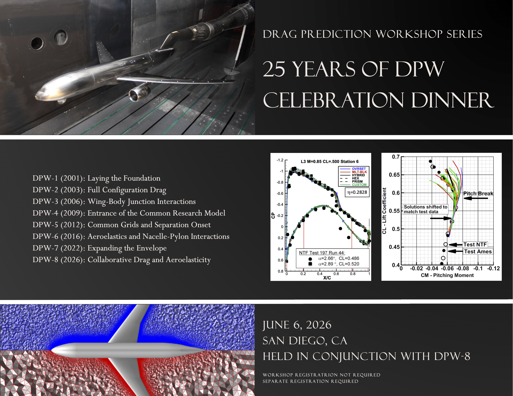

25 Years of DPW
Celebratory Dinner: Saturday, June 6, 2026 in San Diego

We are marking the 25th anniversary of DPW this year, a milestone celebration for these
efforts. Eight workshops and decades of work have dramatically changed the state of
transonic aircraft computational analysis, and these accomplishments should certainly be
celebrated.
A celebratory dinner will be offsite and will have a $30 registration fee.
Details
- Saturday, June 6, 2026 at conclusion of DPW schedule (exact time TBD)
- Quiero Restaurant (http://quierorestaurants.com)
- 879 W Harbor Drive., Suite W14-E (Seaport Village), San Diego, CA
- $30 registration fee (thank you to our sponsors for reducing the fee); scholarships are
available for students if necessary
Corporate Sponsors
Diamond
Metacomp Technologies
Last Updated
January 6, 2026